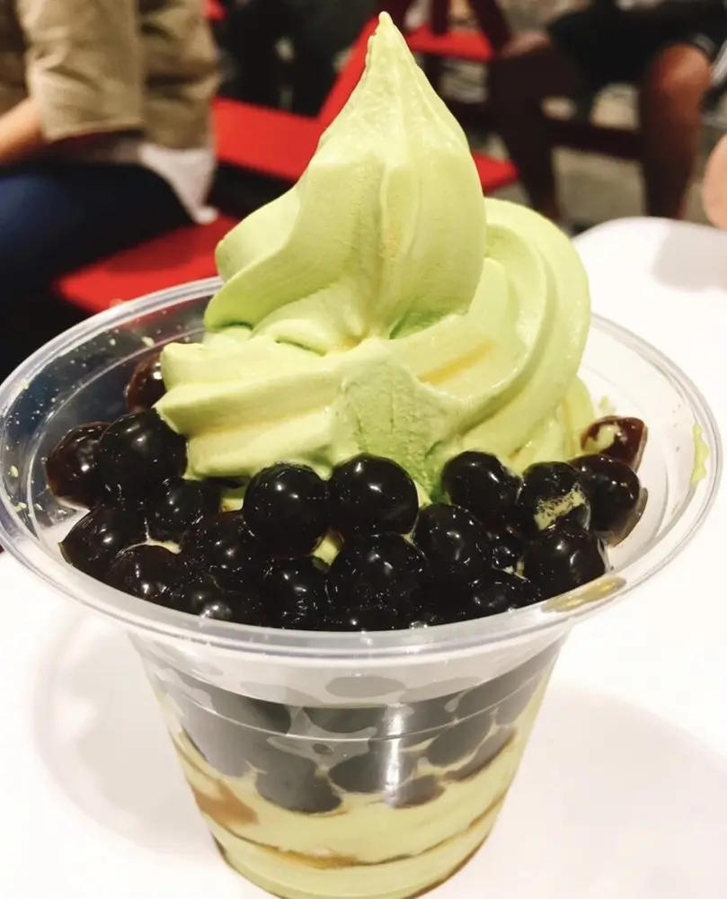
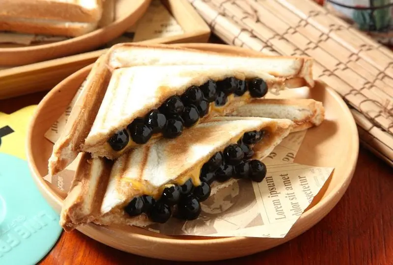
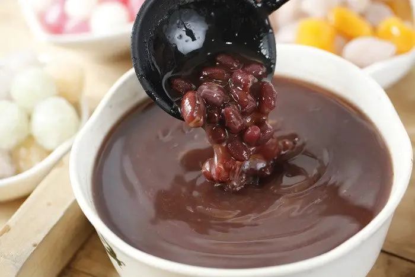

Articles / Tips & trends
Tapioca pearl desserts
2019-10-22 · Tips and Trivia
Original public content from Yen Chuan. Product claims and specifications remain subject to confirmation by the company.
We all know how tapioca pearls are widely used in bubble tea, but that’s not all there is to those treats! Why not try some tapioca pearl desserts?
Indeed, many cafes and restaurants have taken these chewy balls to the next level by adding them to desserts as fillings, toppings and more. Some of those desserts have become sensations in Asia, attracting droves of customers eager to “have their cameras eat first”.
Don’t know where to start? Time to take you on a dive into the world of tapioca pearl desserts!

Icy treats
What’s better to start with than some good ol’ ice cream? Many dessert shops sell soft-serve ice cream or frozen yoghurt (froyo) with a wide variety of toppings, so why not include some tapioca pearls? The soft, creamy ice cream goes perfectly well with the chewy tapioca pearls!
Worried that the pearls will go firm? Our pearls can stay chewy even when served cold!
Want something more Taiwanese? Why not make some snow ice? Unlike the crunchy shaved ice popular in Japan and Southeast Asia, Taiwanese snow ice are instead giant fluffy mounds made of ribbon-like ice flakes. This is due to methods used – the ice blocks are made of water, milk and added flavourings, and are shaved using special snow ice machines.
Snow ice is widely served with syrups, fruits, and of course tapioca pearls!
Tapioca-filled goodies
Chances are you’ve seen those floating around on Instagram? Surely enough, these pearl-filled desserts have captured the hearts of foodies all over. There’s just something about crispy pockets filled with soft tapioca pearls that makes them so irresistible!
Bubble tea toasties are the classic example, filled to the brim with tapioca pearls and custard and toasted to perfection. Some even use milk tea to flavour the custard!


Wintery soups
Who says tapioca pearls are only for summer? Stay warm during winter with hot drinks and desserts!
In East Asia, red bean soup is a traditional winter dessert for many countries. Japan loves to add toasted mochi, while Taiwan swears by tapioca pearls. This can either be smaller pearls used for bubble tea, or larger ones filled with red beans.
The soup is often flavoured with sugar – either white sugar, cane sugar or brown sugar. Careful when you cook the red bean soup though – only add sugar after the beans have softened, or they will stay firm!
That’s all from us for now! Of course, these are only the tip of the iceberg, with many other bubblicious desserts waiting for you to try. Have some ideas of your own? Share them with us!